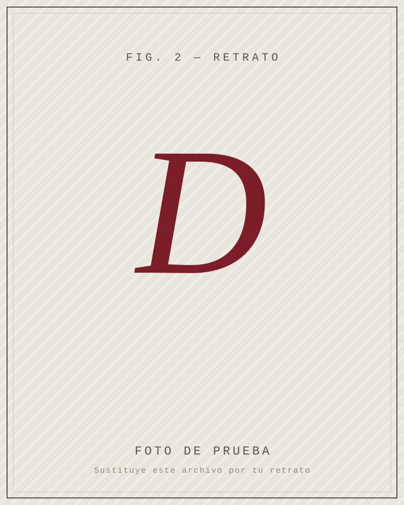

SaaS B2B · Soporte
Atención al cliente asistida por IA
Un copiloto para el equipo de soporte: recupera respuestas de la base de conocimiento, redacta el borrador y deja la última palabra al agente humano.
−40 % en tiempo de primera respuesta1
Guía de campo — Nº 01 / Llevar la IA a producción
Soy consultor de IA y software. Llevo ideas desde el prototipo que impresiona en la demo hasta un sistema que funciona el lunes por la mañana — evaluado, medible y mantenible. Sin humo, sin caja negra y sin que dependáis de mí para siempre.
+10 años en software Sistemas de IA en producción Equipos de toda Europa
Sección I
Trabajo en las cuatro etapas donde los proyectos de IA suelen atascarse. Puedes contratarme para una sola o para el recorrido entero.
Decidir qué construir y qué no. Auditoría de oportunidades, casos de uso priorizados por valor y riesgo, y un plan que cabe en un trimestre — no en un PowerPoint de cien páginas.
Esa demo que funciona «a veces», convertida en un sistema fiable: evaluación automática, guardarraíles, observabilidad y costes de inferencia bajo control.
Construyo contigo: RAG, agentes, automatización e integración con tus sistemas. Código documentado que tu equipo hereda, no una caja negra que nadie se atreve a tocar.
Dejo capacidad instalada: revisión de arquitectura, buenas prácticas y formación para que el lunes siguiente a mi marcha todo siga en pie.
Sección II
Tres encargos recientes. (Sustituye las cifras por las tuyas.)
SaaS B2B · Soporte
Un copiloto para el equipo de soporte: recupera respuestas de la base de conocimiento, redacta el borrador y deja la última palabra al agente humano.
−40 % en tiempo de primera respuesta1
E-commerce · Descubrimiento
Sustituimos la búsqueda por palabras clave por una que entiende la intención. Menos «sin resultados», más carritos.
+18 % de conversión en el buscador2
Fintech · Operaciones
Extracción y clasificación de documentos que antes se procesaban a mano, con revisión humana solo en los casos dudosos.
120 h recuperadas al mes3
1–3 Cifras de ejemplo. Reemplázalas por resultados reales y, si puedes, enlaza un caso de estudio.
Sección III
Ciclos cortos con algo que funciona cada semana. Nada de grandes revelaciones a los seis meses.
01
Una semana entendiendo tu negocio, tus datos y cuál es el objetivo de verdad — el de negocio, no el técnico.
~1 semana
02
Un documento corto y honesto: qué, por qué, cuánto cuesta y en qué orden. Con lo que conviene no hacer.
~1 semana
03
Iteraciones cortas y demos frecuentes. Ves el avance real, no diapositivas de avance.
por sprints
04
Documentación, formación y un equipo que puede seguir solo. El éxito es que dejes de necesitarme.
continuo
Nos ahorró meses de callejones sin salida. Por fin alguien capaz de decir «esto no merece la pena construirlo» antes de gastarnos el presupuesto.
— [Nombre del cliente], CTO en [Empresa]

Sección IV
Llevo más de una década construyendo software y, los últimos años, sistemas de IA que de verdad llegan a producción. He sido ingeniero y responsable técnico, y he visto de cerca por qué los proyectos de IA se quedan a medias: rara vez es el modelo.
Creo en la IA útil y aburrida: la que ahorra horas, reduce errores y no necesita una rueda de prensa. Trabajo en remoto con equipos de toda Europa y me gusta dejar el sitio mejor de como lo encontré — y a tu equipo, más autónomo.
Colofón
Cuéntame en qué estás. Si puedo ayudarte, te lo digo; y si no, también. La primera llamada es gratis y sin compromiso.